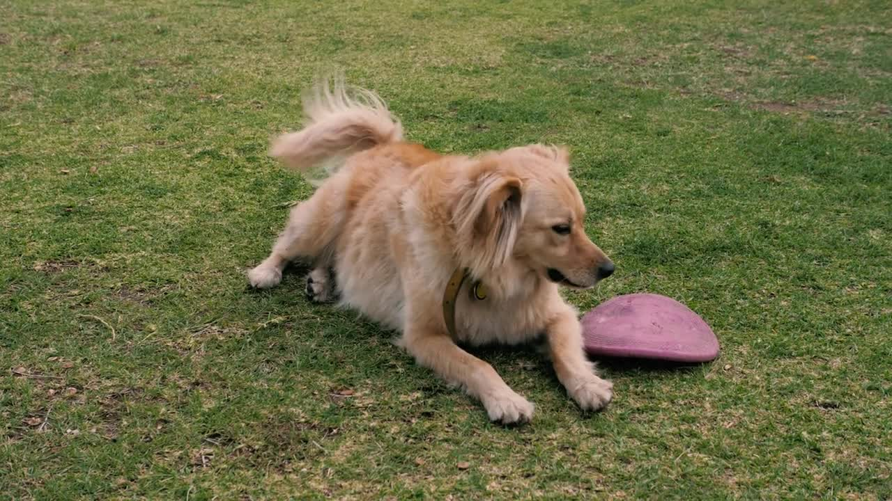
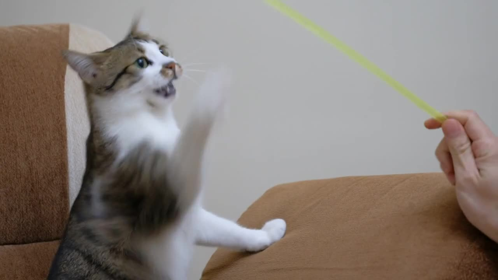

진료 시간
- 평일
- 09:00 – 20:00
- 토요일
- 09:00 – 17:00
- 일 · 공휴일
- 응급 진료
반려동물의 건강과 보호자의 안심.
우리가 매일 진료하는 이유입니다.
HERE TO HELP
처음 만나는 순간부터, 함께한 모든 기록까지.

MORE HEALTHY DAYS, TOGETHER.CARE THAT STAYS WITH YOU
신나게 뛰고, 잘 먹고, 곁에서 잠드는 하루.
그 소중한 일상을 지키는 건강 관리의 시작을
미션 동물병원과 함께하세요.
A PARTNER FOR PET PARENTS
말로 표현하지 못하는 작은 변화도 놓치지 않도록.
보호자가 들려주는 일상과 방문 기록을 바탕으로
우리 아이를 더 깊이 이해합니다.

PLAN YOUR VISIT
야간 · 주말 응급
010-1234-5678
서울 강남구 테헤란로 123
미션빌딩 1층
지하 주차 2시간 무료